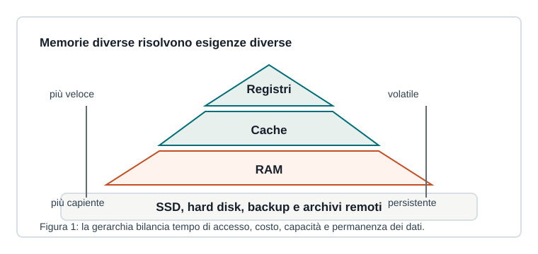

Capitoletto 1.4
Memoria e architettura del sistema
Un elaboratore funziona perché CPU, memoria, bus e periferiche cooperano secondo un'organizzazione precisa.

Architettura di Von Neumann
Nel modello di Von Neumann dati e istruzioni sono conservati nella stessa memoria principale. La CPU li preleva attraverso bus e li elabora seguendo il ciclo di istruzione.
Questo modello spiega ancora molti concetti fondamentali: memoria indirizzabile, programmi caricati in RAM, istruzioni sequenziali e trasferimenti tra componenti.
Gerarchia della memoria
| Livello | Caratteristica | Uso |
|---|---|---|
| Registri | velocissimi e pochi | dati immediati della CPU |
| Cache | molto veloce | copia di dati usati spesso |
| RAM | volatile e più capiente | programmi e dati in esecuzione |
| SSD/HDD | persistenti | file, sistema operativo, applicazioni |
Bus e periferiche
I bus trasportano dati, indirizzi e segnali di controllo. Collegano CPU, memoria e dispositivi di input/output. Una periferica può comunicare tramite controller, driver e interrupt, così il sistema operativo può gestirla senza bloccare inutilmente la CPU.
Quando si salva un documento, i dati passano dalla memoria RAM al controller del disco; il sistema operativo coordina l'operazione e aggiorna il file system.
Collo di bottiglia
Il collo di bottiglia si verifica quando un componente rallenta l'intero sistema. Nei computer spesso la CPU può elaborare più velocemente di quanto la memoria o il disco riescano a fornire dati. Cache, prefetching e bus più efficienti riducono questo problema.
Ripasso
Perché la RAM è detta volatile?
Perché perde il contenuto quando manca alimentazione elettrica.
Che cos'è un bus?
Un insieme di linee e regole di comunicazione usate per trasferire dati, indirizzi e segnali di controllo tra componenti.